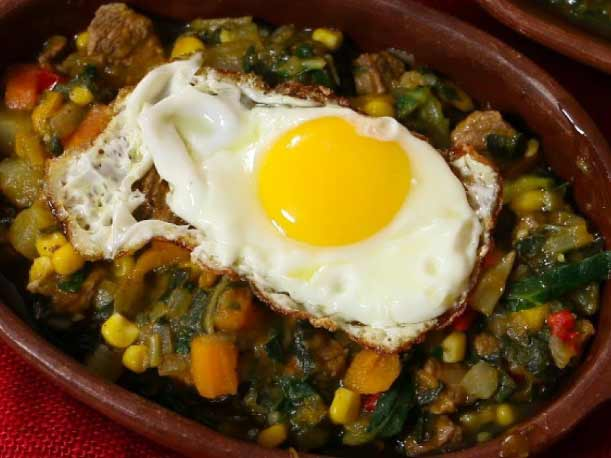

Charquican

Ingredientes:
- 3 papas grandes
- 1 taza de zapallo cortado en cuadrados
- Diente de ajo
- media cebolla picada
- verduras varias
- carne molida
- aceite
- condimentos
Preparación:
- Se pelan las papas y se cortan en cuadrados, se junta con el zapallo y se cuecen con agua tibia con sal por unos 20 minutos.
- Aparte de cuecen en una olla con agua tibia también las verduritas por unos 5 minutos desde que comienza a hervir el agua.
- Mientras tanto, en un sartén se calienta el aceite, se fríe la cebolla y el ajo por unos 3 minutos. Luego se agrega la carne y se aliña con un poco de orégano, ají color, sal y pimienta a gusto, además de las hojas de albahaca picadas. Finalmente se agrega la salsa de tomate. Mezclar todo muy bien y dejar cocinar unos dos minutos más
- Una vez lista las papas y el zapallo, se les retira un poco el agua de la cocción, a no ser que lo desee más aguado en ese caso le deja el agua que desee para lograr la consistencia que quiere Se muelen un poco las papas y el zapallo.
- Se agregan las verduras cocidas, más el sofrito de cebolla con carne. Unir cuidadosamente todo muy bien.